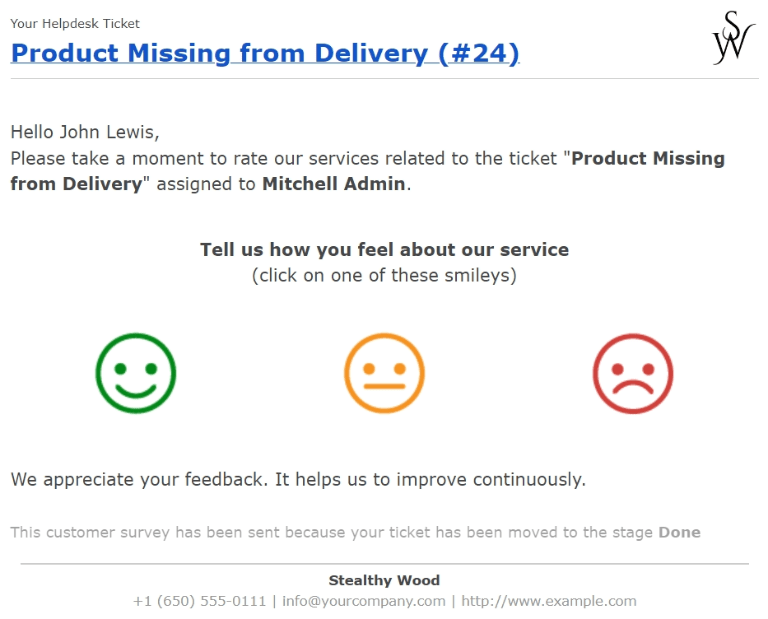
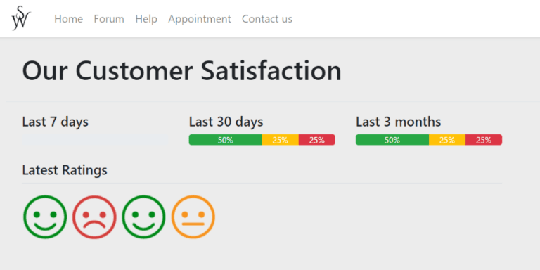

Calificación de clientes¶
Si sus clientes califican la ayuda que recibieron de un equipo de Servicio de asistencia, podrá medir el rendimiento de su equipo y llevar seguimiento de la satisfacción del cliente. Puede publicar estas calificaciones en el portal, así sus clientes tendrán una visión general del rendimiento del equipo.
Habilitar calificaciones de clientes para un equipo del Servicio de asistencia¶
Para habilitar las calificaciones de los clientes en un equipo del Servicio de asistencia, vaya a , seleccione uno de la lista y diríjase a la página de ajustes. Vaya a la sección Rendimiento y seleccione la casilla Calificación de clientes.

Establecer una plantilla de correo electrónico para solicitar una calificación¶
Para solicitar calificaciones a los clientes de forma automática una vez que sus tickets se hayan cerrado, debe agregar una plantilla de correo electrónico a la etapa correspondiente.
Una vez que haya habilitado la calificación de clientes en la página de ajustes del equipo (como se describe arriba), haga clic en Establecer una plantilla de correo electrónico en etapas. Seleccione una etapa de la lista o haga clic en Nuevo para crear una.
Importante
Solo debe solicitar a los clientes que califiquen los tickets cuando se haya solucionado el problema y su ticket esté cerrado. Por lo tanto, solo debe agregar un correo electrónico para la solicitud de calificación a una etapa plegada en kanban, pues los tickets en estas etapas se consideran cerrados.
En la página de ajustes de la etapa, seleccione Servicio de asistencia: solicitud de calificación de ticket en el campo Plantilla de correo electrónico. Esta plantilla se encuentra preconfigurada con calificaciones que los clientes pueden usar para proporcionar retroalimentación. Para ver la plantilla, haga clic en la flecha en el lado derecho del campo.
Una vez que agregó la plantilla a la etapa, se enviará un mensaje de forma automática en cuanto un ticket se mueva a esa etapa. Se les solicitará a los clientes que califiquen la ayuda que recibieron con iconos de colores.

Carita feliz verde - Satisfecho
Carita neutra amarilla - Bien
Carita fruncida roja - Inconforme
Los clientes podrán escribir retroalimentación que complemente su calificación en el sitio web al que serán redirigidos después de seleccionar una calificación. Una vez que se envía, esta se agrega al chatter del ticket.
Truco
También puede visualizar las calificaciones de los clientes en un reporte especializado. Para verlo, vaya a .
Ver también
Publicar calificaciones en el portal del cliente¶
Tras habilitar los ajustes para calificaciones de clientes, aparece una opción para publicarlas en el sitio web del equipo. Habilitar esta configuración permite que los usuarios del portal obtengan un resumen de las calificaciones que el equipo ha recibido en los últimos treinta días. No se incluyen comentarios específicos por escrito, solo las estadísticas del rendimiento del equipo.
Importante
Para mostrar las calificaciones en el portal del cliente, el equipo debe tener su ajuste de visibilidad establecido en Usuarios invitados del portal y todos los usuarios internos. Este ajuste se encuentra en la página de ajustes del equipo, en Visibilidad.
A continuación, para publicar las calificaciones, vaya a y seleccione uno. Diríjase a la sección Rendimiento y habilite Publique la calificación de este equipo en su sitio web.
Para ver las calificaciones de un equipo, el cliente debe iniciar sesión en el portal e ir a uno de sus tickets. Luego de hacer clic en el nombre del equipo en el campo Gestionado por, se le redirigirá a una página con las calificaciones del equipo en los últimos treinta días.
Ocultar de forma manual las calificaciones individuales¶
Puede ocultar de forma manual las calificaciones individuales desde el portal. Esto permite que ciertas calificaciones no se incluyan dentro de las métricas de rendimiento que se muestran a los clientes.
Para que solo los usuarios internos puedan visualizar una calificación, vaya a la página correspondiente. Puede hacerlo de una de estas maneras:
Vaya a y haga clic en una de las tarjetas kanban para obtener una calificación individual.
Vaya a y elimine el filtro Abierto de la barra de búsqueda. Luego filtre por Satisfecho, Regular o Inconforme. Seleccione un ticket de entre los resultados. Haga clic en el botón inteligente Calificación.
Una vez que se encuentre en la página de detalles de la calificación, marque la casilla Visible solo de forma interna.

Ver también